Vector-valued functional data: gait cycles and hurricane tracks
Source:vignettes/x07_Vector-valued_Functions.Rmd
x07_Vector-valued_Functions.RmdA tf vector represents a sample of functions \(f: \mathbb{R} \to \mathbb{R}\) (see the tf
vectors vignette for an introduction to these classes and their
operations). Many real measurement processes, though, produce several
coupled signals that share a common argument: the
(hip, knee) joint-angle pair sampled across a gait cycle,
the (longitude, latitude) position of a hurricane sampled
in time, the (x, y, z) body coordinates of a moving animal.
The natural object is a vector-valued function \(f: \mathbb{R} \to \mathbb{R}^d\), and
tf represents a sample of those with the tf_mv
family: tfd_mv for raw evaluations and tfb_mv
for basis representations. Internally a tf_mv is a bundle
of \(d\) ordinary tf
vectors, so the multivariate methods shown below reuse the existing
univariate numerical kernels by mapping over components.
This article uses two real datasets to put the API through its paces:
-
tf::gait– regularly sampled hip and knee angles for 39 boys across one gait cycle. Question: how variable is “normal” gait, where in the cycle does that variation concentrate, and what are the dominant modes of variation? -
dplyr::storms– irregularly sampled position and intensity of every Atlantic tropical storm or hurricane from 1975 to- Question: do stronger storms travel further and move faster than weak ones?
1. A quick tour of vector-valued functional data
Before the case studies, this part introduces the objects: what a vector-valued function is, the two classes that represent samples of them, how to construct them, and the handful of geometric operations the case studies lean on.
What is a vector-valued function?
A tf vector stores a sample of scalar functions \(f: [a, b] \to \mathbb{R}\). A
vector-valued function bundles \(d\) of them on a shared
argument,
\[ f(t) = \big(f_1(t), \dots, f_d(t)\big), \qquad t \in [a, b], \]
so that as \(t\) runs over the
domain the value \(f(t)\) traces a
path through \(\mathbb{R}^d\).
tf represents a sample of such paths with the
tf_mv family. Internally a tf_mv is a
bundle of d ordinary tf vectors sharing one
argument, so every univariate verb – evaluation, arithmetic,
derivatives, integration, smoothing, basis fitting – extends
component-wise for free.
Two kinds of variation run through everything below: amplitude (how large the values get) and phase (where in \(t\) the features happen). Much of the work in functional data analysis (Ramsay and Silverman 2005) is telling the two apart (Marron et al. 2015), and Section 2 is largely about exactly that.
The tf_mv classes: tfd_mv and
tfb_mv
Like their univariate cousins tfd/tfb,
vector-valued functions come in two flavours:
-
tfd_mv– raw evaluations: each component is atfd, i.e. values on a grid plus an interpolation rule. -
tfb_mv– basis representation: each component is atfb(spline or FPC), i.e. basis coefficients.
Components are named, and a few accessors reach into the bundle:
tf_ncomp() (number of components),
tf_components() (the list of univariate tf
vectors), tf_component(x, k) (one component, by name or
index), and names().
Constructing tf_mv objects
tfd_mv() accepts three interchangeable input layouts. We
use the built-in gait data (Olshen et al. 1989; Ramsay and Silverman 2005)
throughout the gait case study – hip and knee angles, in degrees, for 39
boys, each sampled at 20 points across one gait cycle. The most direct
construction is a named list of univariate
tf vectors:
data(gait)
g <- tfd_mv(list(hip = gait$hip_angle, knee = gait$knee_angle))
g
#> tfd_mv<d=2>[39] (hip, knee): [0.025, 0.975] -> [-12, 64] x [0, 82]
#> components based on 20 evaluations each, interpolation by tf_approx_linear
#> [1]: ▆▆▅▅▄▃▃▃▂▂▂▂▃▄▅▆▇▇▆▆ | ▂▂▂▂▂▂▂▂▂▃▃▄▆▇█▇▆▅▃▂
#> [2]: ▇▇▇▅▅▄▃▃▂▁▁▁▃▄▅▇▇▇▇▇ | ▂▃▃▃▂▂▂▁▁▁▂▄▆▇█▇▆▄▃▂
#> [3]: ▇▇▆▅▅▅▄▃▂▁▁▁▂▄▅▇███▇ | ▂▃▄▄▃▃▂▂▁▂▂▄▆███▇▅▃▂
#> [4]: ▆▆▅▄▃▃▂▂▁▁▁▂▂▃▄▅▅▆▅▅ | ▁▂▂▂▂▁▁▁▁▁▃▅▆▇▇▇▅▂▁▁
#> [5]: ▄▃▂▂▂▂▁▁▁▁▁▁▂▃▅▆▅▅▅▅ | ▁▁▁▁▁▁▁▁▁▂▃▅▆▇█▇▅▃▁▁
#> [6]: █▇▇▆▅▅▄▃▃▂▂▂▂▄▅▆▇███ | ▂▂▃▃▃▂▂▂▁▂▂▃▅▆▇▇▇▅▃▁
#>
#> [....] (33 not shown)The print-out shows d = 2 components on a shared grid,
with a sparkline pair per subject. It behaves like a vector of 39
bivariate curves; component accessors and bracket extraction expose the
two levels separately – curves on rows, argument values on columns,
components on the third array dimension:
tf_ncomp(g)
#> [1] 2
names(tf_components(g))
#> [1] "hip" "knee"
dim(g[1:3, c(0.1, 0.5, 0.9)])
#> [1] 3 3 2
class(g[, , component = "hip"])
#> [1] "tfd_reg" "tfd" "tf" "vctrs_vctr" "list"The same object can be built from a 3-d
array [curve, arg, component] – the layout
as.matrix() returns –
arr <- as.matrix(g) # [curve, arg, component]
dim(arr)
#> [1] 39 20 2
g_arr <- tfd_mv(arr, arg = tf_arg(g))
identical(as.matrix(g_arr), arr)
#> [1] TRUEor from a wide data frame with one column per
component (the long (id, arg, component, value) schema is
what as.data.frame(unnest = TRUE) emits;
long = FALSE gives the wide schema the constructor
consumes):
df <- as.data.frame(g, unnest = TRUE, long = FALSE) # id, arg, hip, knee
head(df, 2)
#> id arg hip knee
#> 1 boy1 0.025 37 10
#> 2 boy1 0.075 36 15
g_df <- tfd_mv(df, id = "id", arg = "arg", value = c("hip", "knee"))Each route also takes an optional domain and a
per-component evaluator (interpolation rule, default
tf_approx_linear). A tfd_mv becomes a basis
object with tfb_mv(), choosing a "spline" or
"fpc" basis; basis arguments apply globally or per
component when passed as a named list:
g_spline <- tfb_mv(g, basis = "spline", k = list(hip = 5, knee = 12),
verbose = FALSE)
g_spline
#> tfb_mv<d=2>[39] (hip, knee): [0.025, 0.975] -> [-12.68226, 64.90069] x [-0.3005807, 81.6327]
#> hip: in basis representation: s(arg, bs = "cr", k = 5, sp = -1)
#> knee: in basis representation: s(arg, bs = "cr", k = 12, sp = -1)
#> [1]: ▆▅▅▅▄▄▃▂▂▂▂▂▃▄▅▆▆▆▆▆ | ▂▂▂▂▂▂▂▂▂▃▃▄▆▇█▇▆▅▃▂
#> [2]: ▇▆▆▆▅▄▃▂▁▁▁▂▃▄▅▆▆▇▇▇ | ▂▃▃▃▂▂▂▁▁▁▂▄▆▇█▇▆▄▃▂
#> [3]: ▆▆▆▆▅▅▃▂▁▁▁▂▃▄▅▆▇▇▇█ | ▂▃▄▄▃▃▂▂▁▂▂▄▆███▇▅▃▂
#> [4]: ▆▅▅▄▃▃▂▂▁▁▁▂▃▃▄▅▅▅▅▅ | ▁▂▂▂▂▁▁▁▁▁▃▄▆▇▇▇▅▂▁▁
#> [5]: ▃▃▃▂▂▂▁▁▁▁▁▂▃▄▄▅▅▅▅▅ | ▁▁▁▁▁▁▁▁▁▂▃▅▆██▇▅▃▁▁
#> [6]: █▇▆▆▅▄▄▃▂▂▂▃▃▄▅▆▇▇██ | ▂▂▃▃▃▂▂▂▁▂▂▃▅▆▇▇▆▅▃▁
#>
#> [....] (33 not shown)Geometry on the bundle: speed, arc length, reparametrization
Because a tf_mv traces a path, the usual curve-geometry
quantities are available, and they return univariate summaries
of the multivariate object:
-
tf_speed(f)\(= \lVert f'(t)\rVert\) – pointwise speed, atfd, -
tf_arclength(f)– total path length, one number per curve, -
tf_reparam_arclength(f)– the same path traversed at unit speed.
head(tf_arclength(g))
#> boy1 boy2 boy3 boy4 boy5 boy6
#> 166.6539 200.2389 223.4584 193.6448 177.4843 191.0575
plot(tf_speed(g), alpha = 0.3, main = expression("pointwise speed " * "||" * f*"'"*(t) * "||"))Aligning vector-valued curves: a ladder
When curves differ mainly in timing, we usually want to factor that out – but “factor out” can mean several different things. There is a ladder of increasingly aggressive operations, distinguished by what each treats as a nuisance (Marron et al. 2015):
| rung | operation | removes | keeps |
tf entry point |
|---|---|---|---|---|
| 1 | arc-length reparametrization | the clock (parametrization only) | shape and size | tf_reparam_arclength() |
| 2 | warp from a 1-d reference signal | phase, onto a chosen reference | amplitude, size, orientation | tf_register(., method = "cc") |
| 3 | joint multivariate warp | phase, from all components at once | amplitude, size, orientation | tf_register(., method = "srvf_mv") |
| 4 | full elastic shape registration | phase + rotation + scale | shape only | tf_register_shape() |
Rung 1 re-labels time within each curve without picking a template; rungs 2 and 3 warp every curve onto a common template (from one reference signal, or from all components jointly) but leave the values untouched; rung 4 additionally rotates and rescales each curve, landing in a shape space where only the geometric form remains. Section 2 walks all four rungs on the gait data – and shows where the top rung is, and is not, the right tool.
2. How variable is a “normal” gait cycle?
We built the two-component object g above. The two
natural views of these 39 curves are the time-series
(type = "facet", one panel per component) and the
trajectory in phase space
(type = "trajectory", the default for two-component
objects).
plot(g, type = "facet", alpha = 0.4)
plot(g, alpha = 0.4) # type = "trajectory" by default for d = 2The facet view shows that both joints flex twice per cycle; the trajectory view collapses time and reveals the characteristic “butterfly” loop traced out as the leg cycles through stance and swing. Both views suggest the between-subject spread is far from uniform along the cycle.
Pointwise mean and standard deviation
mean() and sd() are vctrs group generics
and dispatch component-wise: they each return a length-1
tfd_mv. Plot the raw curves with plot.tf, then
overlay the mean +/- 2 sd envelope with lines.tf – all
arithmetic on the components is component-wise on tf_mv, so
mu + 2 * s is itself a tfd_mv and
tf_component(...) gives the per-axis envelope:
mu <- mean(g)
s <- sd(g)
op <- par(mfrow = c(1, 2), mar = c(4, 4, 2, 1))
for (k in seq_len(tf_ncomp(g))) {
nm <- names(tf_components(g))[k]
plot(tf_component(g, k), alpha = 0.25,
ylab = nm, main = nm)
lines(tf_component(mu, k), col = "red", lwd = 2)
lines(tf_component(mu + 2 * s, k), col = "red", lwd = 1.2, lty = 2)
lines(tf_component(mu - 2 * s, k), col = "red", lwd = 1.2, lty = 2)
}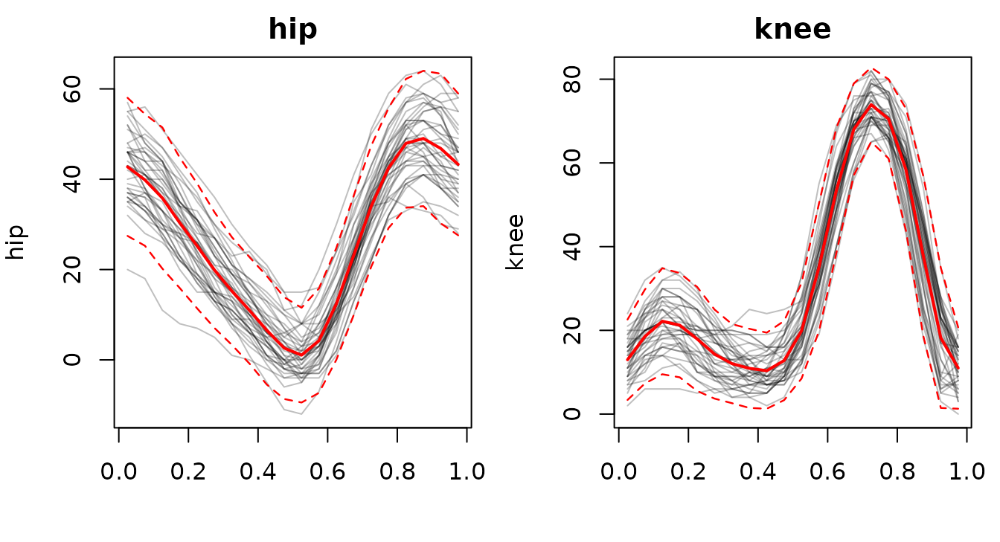
par(op)The pointwise sd peaks roughly where the angle itself is changing fastest – around the stance/swing transitions – so most of the between-subject variability lives in timing of those transitions, not in the angles attained at rest.
Most- and least-varied subjects
tf_arclength() measures the path length traced out in
(hip, knee)-space. A short orbit = a subject whose
(hip, knee) excursions are small or who moves the two
joints in lock-step; a long orbit = a subject with large-amplitude, less
synchronised excursions.
arc <- tf_arclength(g)
extreme <- c(which.min(arc), which.max(arc))
extreme
#> boy1 boy39
#> 1 39
plot(g, alpha = 0.15)
lines(g[extreme[1]], col = "steelblue", lwd = 2.2)
lines(g[extreme[2]], col = "firebrick", lwd = 2.2)
legend("bottomright", bty = "n",
legend = c(sprintf("min arc length (%.0f deg)", arc[extreme[1]]),
sprintf("max arc length (%.0f deg)", arc[extreme[2]])),
col = c("steelblue", "firebrick"), lwd = 2)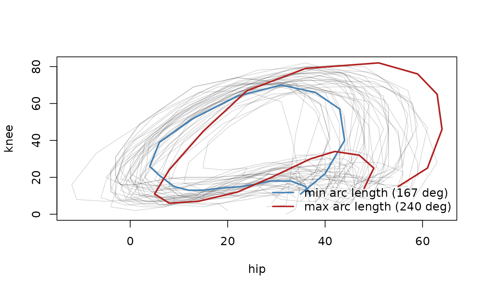
A ladder of registrations
The pointwise sd above conflates two kinds of between-subject variability: amplitude (how far the knee swings) and phase (at what fraction of the cycle heel-strike happens). Removing phase – “registration” – can mean progressively more, depending on what we are willing to treat as a nuisance. Below are four rungs, applied in turn to the gait sample, each followed by a facet plot of the result; we quantify them together at the end.
Rungs 3 and 4 (and the rung-comparison at the end) use the elastic
registration routines from the suggested fdasrvf
package – those code chunks are only evaluated if fdasrvf
is installed.
Rung 1 – arc-length reparametrization
The mildest operation re-labels time within each curve and
uses no template at all. tf_reparam_arclength() traverses
every curve at approximately constant speed in its value space: the
(hip, knee) path is unchanged – the same set of points –
but equal time intervals now cover equal arc length.
g_unit <- tf_reparam_arclength(g)
plot(g_unit, type = "facet", alpha = 0.3)tf_speed() makes the effect explicit. The raw speeds
swing wildly (fast through swing, near-still in stance); after
reparametrization they are nearly flat – each curve traversed at
constant speed:
sp_raw <- tf_speed(g)
sp_unit <- tf_speed(g_unit)
yl <- c(0, max(c(unlist(tf_evaluations(sp_raw)),
unlist(tf_evaluations(sp_unit))), na.rm = TRUE))
op <- par(mfrow = c(1, 2), mar = c(4, 4, 2, 1))
plot(sp_raw, alpha = 0.4, ylim = yl, main = "raw parameterization",
ylab = "speed (deg / cycle)")
lines(mean(sp_raw), col = "firebrick", lwd = 2)
plot(sp_unit, alpha = 0.4, ylim = yl, main = "arc-length parameterization",
ylab = "speed (deg / cycle)")
lines(mean(sp_unit), col = "firebrick", lwd = 2)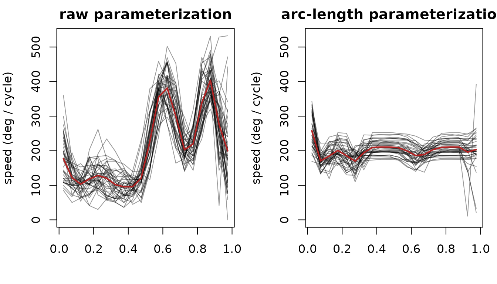
par(op)No curve is moved toward any other: this removes the parametrization only, leaving shape and size untouched and aligning nothing to a common reference.
Rung 2 – alignment to a 1-d reference signal
The next rung aligns curves to each other by estimating one shared time-warp per curve and applying it to both components. The warp is driven by a single univariate reference signal – a component, or any derived quantity. The choice matters: the knee carries the cycle’s sharpest event (heel-strike), so it locks the alignment best.
r_knee <- tf_register(g, method = "cc", ref_component = "knee")
plot(tf_aligned(r_knee), type = "facet", alpha = 0.3)The knee component visibly tightens; the hip, phase-coupled to it,
tightens only incidentally. Choosing ref_component = "hip"
or = tf_speed would emphasise different events – a 1-d
reference forces that modelling choice. The warps themselves are
univariate tfds mapping raw to aligned phase, fanning out
around the swing phase where heel-strike timing varies between
subjects:
plot(tf_invert(tf_inv_warps(r_knee)), alpha = 0.5,
main = "reference (knee) warps", ylab = "aligned phase")
abline(0, 1, lty = 3)Rung 3 – joint multivariate reparametrization
(srvf_mv)
method = "srvf_mv" removes the choice of reference: it
estimates the single time-warp that best aligns the joint
(hip, knee) trajectories in the elastic
(square-root-velocity) sense, using all components at once (Srivastava,
Wu, et al. 2011; Tucker et al.
2013). It is still only a re-timing – values are never
rotated or rescaled – and the template is the multivariate Karcher mean
in tf_template(reg_mv).
reg_mv <- tf_register(g, method = "srvf_mv", max_iter = 2)
plot(tf_aligned(reg_mv), type = "facet", alpha = 0.3)
plot(tf_invert(tf_inv_warps(reg_mv)), alpha = 0.5,
main = "srvf_mv warps", ylab = "aligned phase")
abline(0, 1, lty = 3)Because the warp must compromise between both components rather than chase one, it need not shrink any single channel as hard as a reference-targeted warp – but it needs no reference choice and respects both axes symmetrically.
Rung 4 – full elastic shape registration
tf_register_shape() goes furthest: on top of the
time-warp it also fits, per curve, a rotation and a
scale, and reports the aligned curves in a centered,
normalised shape space (Srivastava, Klassen, et al. 2011; Srivastava and Klassen 2016).
Translation, rotation and size are all quotiented out.
reg_shape <- tf_register_shape(g, max_iter = 2)
plot(tf_aligned(reg_shape), type = "facet", alpha = 0.3) # note the y-axis: shape spaceThe (hip, knee) trajectory view makes the collapse vivid
– the original butterfly loops on the left, the shape-registered curves
on the right reduced to essentially one normalised shape (note the very
different axis ranges):
op <- par(mfrow = c(1, 2), mar = c(4, 4, 2, 1))
plot(g, type = "trajectory", alpha = 0.3, main = "original")
plot(tf_aligned(reg_shape), type = "trajectory", alpha = 0.3,
main = "shape-registered (shape space)")
par(op)The estimated rotations sit near the identity and the scales near 1 (little genuine rotation or scaling is present), yet the normalisation alone flattens the real between-subject differences:
round(tf_rotations(reg_shape)[, , 1], 3) # rotation for subject 1
#> hip knee
#> hip 1.000 0.023
#> knee -0.023 1.000
summary(as.numeric(tf_scales(reg_shape))) # scales, relative to the template
#> Min. 1st Qu. Median Mean 3rd Qu. Max.
#> 178.0 199.9 213.2 214.7 229.5 256.8Gait’s two axes are not interchangeable: hip angle and knee angle are distinct physical quantities in fixed units. Quotienting out rotation mixes them into meaningless combinations, and quotienting out scale discards amplitude – which here is the signal of interest. Shape registration is the wrong tool for a bundle of fixed-unit channels; we return to where it is right below.
Quantifying the alignment
Two views across the rungs. First, a visual overview: the two components (rows hip, knee) and the estimated time-warp (row warp) for each registration, side by side – as-observed, arc-length reparametrized, registered to a 1-d reference (knee), registered jointly (srvf_mv), and fully shape-registered. Raw data has no warp; arc-length has no template warp but does reparametrize, so its warp panel shows the normalised cumulative arc length.
# warp implied by arc-length reparametrization: normalised cumulative arc length
# (raw cycle phase -> arc-length phase, same direction as the registration warps)
arclen_warp <- function(mv) {
sp <- tf_speed(mv)
arg <- as.numeric(tf_arg(sp))
dom <- tf_domain(sp)
d <- diff(arg)
w <- sapply(tf_evaluations(sp), function(s) {
cum <- c(0, cumsum((head(s, -1) + tail(s, -1)) / 2 * d))
dom[1] + diff(dom) * cum / cum[length(cum)]
})
tfd(t(w), arg = arg, domain = dom)
}
cols <- list(
list(nm = "as-observed", data = g, warp = NULL),
list(nm = "arc-length", data = g_unit, warp = arclen_warp(g)),
list(nm = "ref = knee", data = tf_aligned(r_knee), warp = tf_invert(tf_inv_warps(r_knee))),
list(nm = "srvf_mv", data = tf_aligned(reg_mv), warp = tf_invert(tf_inv_warps(reg_mv))),
list(nm = "shape", data = tf_aligned(reg_shape), warp = tf_invert(tf_inv_warps(reg_shape)))
)
op <- par(mfrow = c(3, 5), mar = c(2.6, 3.2, 2, 0.8), mgp = c(1.9, 0.6, 0))
for (j in seq_along(cols))
plot(tf_component(cols[[j]]$data, "hip"), alpha = 0.3,
main = cols[[j]]$nm, ylab = if (j == 1) "hip" else "")
for (j in seq_along(cols))
plot(tf_component(cols[[j]]$data, "knee"), alpha = 0.3,
main = "", ylab = if (j == 1) "knee" else "")
for (j in seq_along(cols)) {
w <- cols[[j]]$warp
if (is.null(w)) {
plot.new(); text(0.5, 0.5, "(identity)", col = "grey55")
} else {
plot(w, alpha = 0.4, main = "", ylab = if (j == 1) "warp" else "")
abline(0, 1, lty = 3)
}
}
par(op)Across the warp row, the registration warps fan out around the swing
phase where heel-strike timing varies between subjects; the shape warp
is comparable, since it shares the same time-warp step. Down the
shape column the components have been rescaled into
normalised shape space – note the compressed vertical axis – which is
why those curves look so much tighter than the others.
Second, the numbers: the maximum pointwise sd of each component,
before and after. Rungs 1–3 keep the data in its original degree units
and are directly comparable; rung 4 (marked *) lives in
normalised shape space, so its row is on a different scale and only
illustrates the collapse.
peak_sd <- function(f, k) {
arg <- tf_arg(f)
max(unlist(tf_evaluate(tf_component(sd(f), k), arg)))
}
rungs <- list(
"raw" = g,
"1 arc-length" = g_unit,
"2 reference (knee)" = tf_aligned(r_knee),
"3 srvf_mv" = tf_aligned(reg_mv),
"4 shape (*)" = tf_aligned(reg_shape)
)
data.frame(
registration = names(rungs),
sd_hip = sapply(rungs, peak_sd, "hip"),
sd_knee = sapply(rungs, peak_sd, "knee"),
row.names = NULL
)
#> registration sd_hip sd_knee
#> 1 raw 8.28498797 9.54533186
#> 2 1 arc-length 8.04009724 7.39283787
#> 3 2 reference (knee) 7.91270379 6.33047672
#> 4 3 srvf_mv 8.20232891 8.22321203
#> 5 4 shape (*) 0.01935199 0.02937269In degree units the phase rungs chip away at the spread only modestly
– gait’s phase variation is real but subtle. The knee-reference warp
shrinks the knee component most (it targets that channel);
srvf_mv spreads a gentler correction across both; and
arc-length reparametrization, which aligns nothing to a common template,
barely moves the pointwise sd at all. Rung 4’s near-zero entries are
not a better alignment – they are the signal being quotiented
away.
Shape registration and its quotient spaces
Shape registration earns its keep when the components really are interchangeable spatial coordinates and position, orientation and size are all nuisances: handwriting, gesture or movement paths, object outlines. Here is a synthetic example – a single base curve \((t,\, t^2)\), copied three times with each copy rotated, rescaled and shifted in the plane:
t <- seq(0, 1, length.out = 51)
base <- rbind(t, t^2)
scales <- c(1, 0.7, 1.3)
angles <- c(0, 0.4, -0.25)
offset <- rbind(c(0.2, -0.1), c(0.4, -0.2), c(0.6, -0.3))
beta <- array(NA_real_, dim = c(3, length(t), 2),
dimnames = list(c("a", "b", "c"), NULL, c("x", "y")))
for (i in 1:3) {
rot <- matrix(c(cos(angles[i]), sin(angles[i]),
-sin(angles[i]), cos(angles[i])), nrow = 2)
curve <- scales[i] * (rot %*% base) + matrix(offset[i, ], 2, length(t))
beta[i, , 1] <- curve[1, ]
beta[i, , 2] <- curve[2, ]
}
shapes <- tfd_mv(beta, arg = t)What counts as “the same shape” depends on which transformations we
quotient out, and tf_register_shape() lets us choose via
the rotation and scale flags (translation and
the time-warp are always removed). The three quotients differ in what
survives (again, these chunks need the suggested
fdasrvf package):
reg_full <- tf_register_shape(shapes, max_iter = 2, rotation = TRUE, scale = TRUE)
reg_rot <- tf_register_shape(shapes, max_iter = 2, rotation = TRUE, scale = FALSE)
reg_scale <- tf_register_shape(shapes, max_iter = 2, rotation = FALSE, scale = TRUE)
op <- par(mfrow = c(2, 2), mar = c(4, 4, 2, 1))
plot(shapes, asp = 1, col = 1:3, lwd = 2, main = "input: 3 placements")
plot(tf_aligned(reg_rot), asp = 1, col = 1:3, lwd = 2, main = "rotation-only (keeps size)")
plot(tf_aligned(reg_scale), asp = 1, col = 1:3, lwd = 2, main = "scale-only (keeps orientation)")
plot(tf_aligned(reg_full), asp = 1, col = 1:3, lwd = 2, main = "rotation + scale (full)")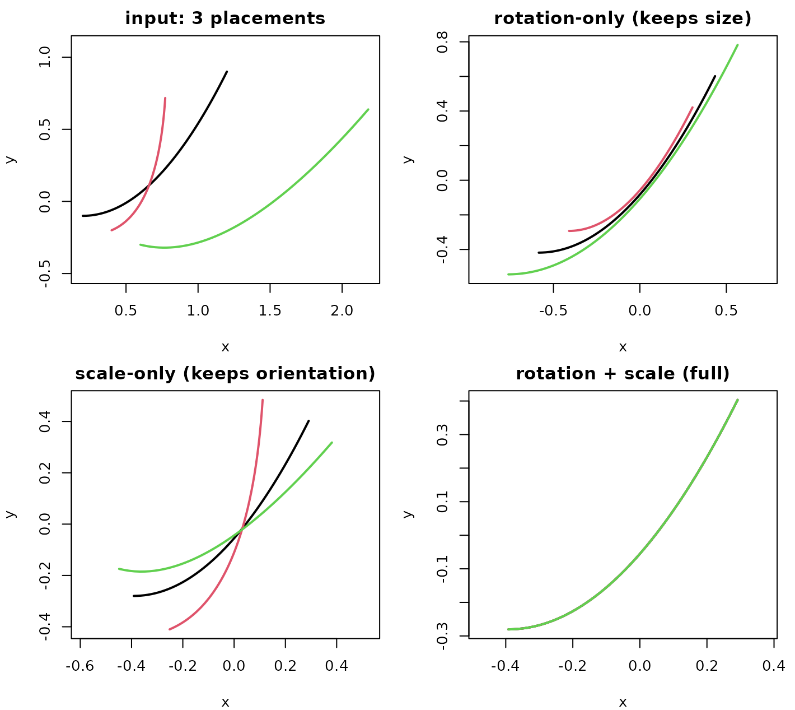
par(op)-
rotation-only (
scale = FALSE): orientations are aligned but the original sizes are kept, so the curves stay nested. -
scale-only (
rotation = FALSE): sizes are equalised but orientations are kept, so the curves fan out at one common size. - rotation + scale (the full shape quotient): both are removed, and the three congruent curves collapse onto a single shape.
tf_scales() reports the per-curve size factors that were
removed (relative to the template; 1 whenever scaling is
off):
data.frame(curve = c("a", "b", "c"),
injected = scales,
full = round(as.numeric(tf_scales(reg_full)), 3),
rot_only = round(as.numeric(tf_scales(reg_rot)), 3),
scale_only = round(as.numeric(tf_scales(reg_scale)), 3))
#> curve injected full rot_only scale_only
#> 1 a 1.0 1.463 1 1.466
#> 2 b 0.7 1.024 1 1.026
#> 3 c 1.3 1.902 1 1.905Modes of variation via FPC
Back on the gait sample, with the most visible phase variation reduced (we carry the knee-aligned curves forward), fit a per-component FPC basis (Ramsay and Silverman 2005). The leading PCs now mostly describe within-component amplitude modes:
fpc_var <- function(comp) attr(comp, "score_variance")
g_aligned <- tf_aligned(r_knee)
g_b <- tfb_mv(g_aligned, basis = "fpc", verbose = FALSE)
v_hip <- fpc_var(tf_component(g_b, "hip")); v_hip <- v_hip / sum(v_hip)
v_knee <- fpc_var(tf_component(g_b, "knee")); v_knee <- v_knee / sum(v_knee)
op <- par(mfrow = c(1, 2), mar = c(4, 4, 2, 1))
barplot(head(v_hip, 6), names.arg = 1:6, main = "hip: variance share",
ylab = "proportion", col = "grey70")
barplot(head(v_knee, 6), names.arg = 1:6, main = "knee: variance share",
ylab = "proportion", col = "grey70")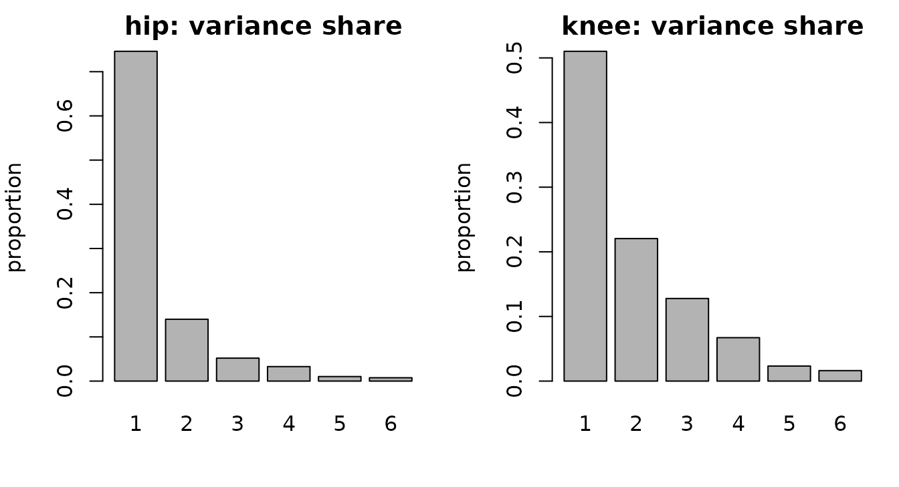
par(op)
# residual: how well does the low-rank FPC basis approximate the curves?
g_round <- vctrs::vec_cast(g_b, g_aligned)
resid <- g_aligned - g_round
rmse_per_subject <- sqrt(unlist(lapply(tf_evaluations(resid), function(m) {
mean(as.matrix(m[, -1L, drop = FALSE])^2)
})))
summary(rmse_per_subject)
#> Min. 1st Qu. Median Mean 3rd Qu. Max.
#> 0.1685 0.2931 0.3377 0.3485 0.4048 0.5658The first 2-3 FPCs explain most of the remaining within-component
variance, and the RMSE between the registered and FPC-reconstructed
(hip, knee) curves is well below a degree for most
subjects.
Joint modes of variation via MFPCA
The per-component FPC above gives each component its own
scores: a subject’s hip-mode-1 score and knee-mode-1 score are separate
numbers, so the basis cannot, on its own, express that the two joints
co-vary. Multivariate FPCA (Happ and Greven 2018), via
tfb_mfpc(), instead produces a single score per
subject per mode, paired with a vector-valued
eigenfunction \(\Psi_m =
(\Psi_m^{\text{hip}}, \Psi_m^{\text{knee}})\). One shared score
\(s_{im}\) scales both halves at once,
so each mode encodes coupled hip-knee co-variation in a single
coordinate system: \[ f_i(t) \approx \mu(t) +
\sum_m s_{im}\,\Psi_m(t). \]
The default weights = "inverse_variance" normalises each
component to equal total variance before combining, so the
(larger-range) knee does not simply dominate the hip;
"snr", "equal", or a numeric vector are also
available.
g_m <- tfb_mfpc(g_aligned, pve = 0.95)
g_m
#> tfb_mv<d=2>[39] (hip, knee): [0.025, 0.975] -> [-10.93848, 65.14214] x [0.405835, 80.19255]
#> components in basis representation: 7 MFPCs
#> [1]: ▆▆▅▅▄▄▃▃▂▂▂▂▃▄▅▆▇▇▇▆ | ▁▂▂▂▂▂▂▂▂▂▃▄▆▇▇▇▆▄▃▂
#> [2]: ▇▇▆▅▄▄▃▂▁▁▁▂▃▄▆▇▇▇▇▇ | ▂▃▃▃▂▂▁▁▁▂▃▄▆▇█▇▆▅▃▂
#> [3]: ▇▇▆▅▄▃▂▂▁▁▁▂▃▄▆▇███▇ | ▂▃▄▃▃▂▂▁▁▂▃▅▇███▇▅▃▂
#> [4]: ▆▆▅▄▄▃▃▂▁▁▁▁▂▃▄▅▅▆▅▅ | ▁▂▂▂▂▁▁▁▁▁▂▄▆▇▇▇▆▄▁▁
#> [5]: ▄▃▂▂▂▁▁▁▁▁▁▁▂▃▄▅▆▆▅▅ | ▁▁▁▁▁▁▁▁▁▂▃▄▆▇█▇▆▄▁▁
#> [6]: █▇▆▅▄▄▃▃▂▂▂▂▃▄▆▇████ | ▂▃▃▂▂▂▂▁▂▂▃▄▆▇▇▇▆▄▂▂
#>
#> [....] (33 not shown)
scores <- tf_mfpc_scores(g_m) # 39 x M, shared across both components
nu <- attr(g_m, "mfpc")$evalues # joint (multivariate) eigenvalues
ve <- nu / sum(nu) # variance share per shared mode
dim(scores)
#> [1] 39 7
round(head(ve, 4), 3)
#> [1] 0.465 0.224 0.138 0.084The multivariate eigenfunctions come back as a tfd_mv –
one bivariate “curve” per mode – so each MFPC can be inspected component
by component. The leading mode’s hip and knee parts move together, which
is exactly the coupling the independent per-component analysis could not
represent:
psi <- tf_mfpc_efunctions(g_m)
k_show <- min(3L, length(psi))
op <- par(mfrow = c(1, 2), mar = c(4, 4, 2, 1))
plot(tf_component(psi, "hip")[seq_len(k_show)], col = seq_len(k_show), lwd = 2,
main = "MFPC eigenfunctions: hip", ylab = "loading")
plot(tf_component(psi, "knee")[seq_len(k_show)], col = seq_len(k_show), lwd = 2,
main = "MFPC eigenfunctions: knee", ylab = "loading")
legend("topright", bty = "n", lwd = 2, col = seq_len(k_show),
legend = paste("MFPC", seq_len(k_show)), cex = 0.85)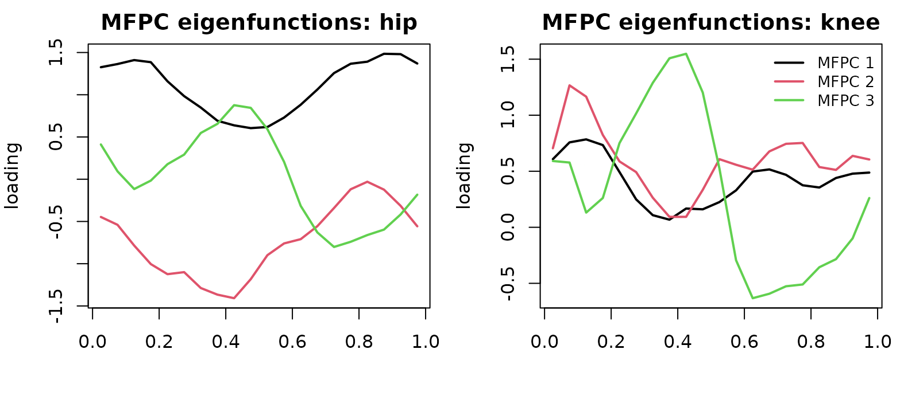
par(op)The shared scores live in one coordinate system, so MFPCA summarises
each subject with a single set of M numbers rather than one
set per component. That is a genuine trade-off: the independent
per-component basis is free to optimise each component separately, so it
reconstructs more accurately for a given per-component truncation, while
MFPCA spends fewer, coupled scores and accepts a little more
error in exchange for the shared coordinate system:
rmse_mv <- function(approx) {
resid <- g_aligned - vctrs::vec_cast(approx, g_aligned)
sqrt(mean(unlist(lapply(tf_evaluations(resid), function(m) {
as.matrix(m[, -1L, drop = FALSE])^2
}))))
}
n_indep <- sum(vapply(tf_components(g_b),
function(co) length(attr(co, "score_variance")), integer(1)))
data.frame(
representation = c("independent FPC", "joint MFPCA"),
stored_scores = c(n_indep, attr(g_m, "mfpc")$npc),
rmse = round(c(rmse_mv(g_b), rmse_mv(g_m)), 3)
)
#> representation stored_scores rmse
#> 1 independent FPC 23 0.359
#> 2 joint MFPCA 7 1.228The first 2 shared modes already capture 69% of the joint variance.
New subjects can be projected onto this fitted basis with
tf_rebase(), which re-scores them jointly rather than
component by component.
3. Atlantic storms as 4-dimensional curves
dplyr::storms records four time-varying quantities for
every Atlantic tropical storm or hurricane from 1975 to 2024, sampled
every 6 hours along the storm’s life: position (longitude, latitude) and
intensity (sustained wind speed, central pressure). The natural object
is a single four-component vector-valued curve per
storm, f_i: [0, T_i] -> R^4 – spatial trajectory and
intensity life-cycle bundled together.
Two practical points:
-
tracks_km– the spatial(x_km, y_km)view in physical units (projecting each storm’slong/latinto a per-storm local-km frame at its own mean latitude) – is what we use for arc length and forward speed, because deg/h speeds wrongly upweight east-west motion at high latitudes (a longitude degree is ~111 km at the equator but only ~78 km at 45 N). - Most life-cycle comparisons between short and long storms only make
sense on a normalised time axis
phase = t / T_i in [0, 1]. We build a normalised 4-d object on top of the real-time one and use the appropriate version per question.
KM_PER_DEG <- 111.32
storms_clean <- storms |>
mutate(
storm_id = paste(name, year),
ts = as.POSIXct(ISOdate(year, month, day, hour), tz = "UTC")
) |>
group_by(storm_id) |>
distinct(ts, .keep_all = TRUE) |> # dedupe duplicate-timestamp rows
mutate(
t_hours = as.numeric(ts - min(ts), units = "hours"),
phase = if (max(t_hours) > 0) t_hours / max(t_hours) else 0,
ref_lat = mean(lat),
x_km = (long - mean(long)) * KM_PER_DEG * cos(ref_lat * pi / 180),
y_km = (lat - ref_lat) * KM_PER_DEG
) |>
filter(n() >= 16, !is.na(wind), !is.na(pressure)) |> # >= 4 days
ungroup()
# spatial (km, real time): the compact data-frame constructor.
tracks_km <- storms_clean |>
transmute(storm_id, t_hours, x = x_km, y = y_km) |>
tfd_mv(id = "storm_id", arg = "t_hours", value = c("x", "y"))
# Equivalent spelling if the component tfd vectors are already available.
tracks_km_from_components <- tfd_mv(list(
x = tfd(storms_clean, id = "storm_id", arg = "t_hours", value = "x_km"),
y = tfd(storms_clean, id = "storm_id", arg = "t_hours", value = "y_km")
))
# full 4-d, on normalised life-cycle phase
tracks4 <- tfd_mv(list(
long = tfd(storms_clean, id = "storm_id", arg = "phase", value = "long"),
lat = tfd(storms_clean, id = "storm_id", arg = "phase", value = "lat"),
wind = tfd(storms_clean, id = "storm_id", arg = "phase", value = "wind"),
pres = tfd(storms_clean, id = "storm_id", arg = "phase", value = "pressure")
))
tracks4
#> tfd_mv<d=4>[518] (long, lat, wind, pres): [0, 1] -> [-136.9, 13.5] x [7, 70.7] x [10, 165] x [882, 1024]
#> components based on 16 to 96 evaluations each, interpolation by tf_approx_linear
#> [1]: (0.000,-79);(0.033,-79);(0.067,-79); ... | (0.000,28);(0.033,28);(0.067,30); ... | (0.000,25);(0.033,25);(0.067,25); ... | (0.000,1013);(0.033,1013);(0.067,1013); ...
#> [2]: (0.000,-68);(0.053,-70);(0.105,-70); ... | (0.000,26);(0.053,26);(0.105,26); ... | (0.000,20);(0.053,20);(0.105,25); ... | (0.000,1014);(0.053,1014);(0.105,1014); ...
#> [3]: (0.000,-70);(0.031,-71);(0.062,-72); ... | (0.000,22);(0.031,22);(0.062,22); ... | (0.000,25);(0.031,25);(0.062,25); ... | (0.000,1011);(0.031,1011);(0.062,1010); ...
#> [4]: (0.000,-46);(0.036,-48);(0.071,-48); ... | (0.000,33);(0.036,34);(0.071,34); ... | (0.000,35);(0.036,40);(0.071,40); ... | (0.000,1005);(0.036,1005);(0.071,1005); ...
#> [5]: (0.000,-55);(0.022,-56);(0.044,-57); ... | (0.000,18);(0.022,18);(0.044,18); ... | (0.000,25);(0.022,25);(0.044,25); ... | (0.000,1009);(0.022,1009);(0.044,1009); ...
#> [6]: (0.000,-57);(0.056,-57);(0.111,-58); ... | (0.000,23);(0.056,24);(0.111,24); ... | (0.000,25);(0.056,30);(0.111,35); ... | (0.000,1005);(0.056,1005);(0.111,1005); ...
#>
#> [....] (512 not shown)
# storm-level metadata
peak <- storms |>
group_by(name, year) |>
summarise(peak_cat = suppressWarnings(max(category, na.rm = TRUE)),
.groups = "drop") |>
mutate(peak_cat = if_else(is.finite(peak_cat), peak_cat, 0),
peak_cat = as.integer(peak_cat),
storm_id = paste(name, year))
df <- tibble::tibble(
storm_id = names(tracks4),
track = tracks4,
track_km = tracks_km
) |>
left_join(peak, by = "storm_id") |>
mutate(strength = factor(
pmin(peak_cat, 4),
levels = 0:4,
labels = c("TS/TD", "Cat 1", "Cat 2", "Cat 3", "Cat 4+")
))Before analysing the storms, inspect the irregular object directly.
Counts vary by storm because each lifetime has a different number of
6-hourly observations, while the long data-frame representation keeps
the components aligned by (storm, phase).
head(tf_count(tracks4))
#> long lat wind pres
#> Amy 1975 31 31 31 31
#> Blanche 1975 20 20 20 20
#> Caroline 1975 33 33 33 33
#> Doris 1975 29 29 29 29
#> Eloise 1975 46 46 46 46
#> Faye 1975 19 19 19 19
as.data.frame(tracks4[1:2], unnest = TRUE) |> head()
#> id arg component value
#> 1 Amy 1975 0.00000000 long -79.0
#> 2 Amy 1975 0.00000000 lat 27.5
#> 3 Amy 1975 0.00000000 wind 25.0
#> 4 Amy 1975 0.00000000 pres 1013.0
#> 5 Amy 1975 0.03333333 long -79.0
#> 6 Amy 1975 0.03333333 lat 28.5Movement workflow: regularize, then describe
Joo et al. (2019) describe movement analysis as a
workflow built around tracking records (x, y, t): clean the
fixes, regularize or reconstruct the path when needed, visualize the
track, then extract descriptors such as speed, heading and turning
angles. The storm data follow the same pattern. The build step above
already performed basic preprocessing: duplicate timestamps were
removed, very short tracks were dropped, and longitude/latitude were
projected into local kilometre coordinates.
For diagnostic plots it is useful to regularize a few storms onto a
common lifecycle grid. Differentiating the regularized
(x, y) curves gives velocity components; their norm is
forward speed, and atan2(v_y, v_x) gives heading. Turning
angle is the wrapped difference between successive headings.
movement_ids <- c("Andrew 1992", "Katrina 2005", "Sandy 2012")
movement_ids <- movement_ids[movement_ids %in% df$storm_id]
movement_rows <- match(movement_ids, df$storm_id)
movement_grid <- seq(0, 1, length.out = 81)
movement_duration <- vapply(
tf_arg(df$track_km[movement_rows]),
\(t) max(t) - min(t),
numeric(1)
)
movement_eval <- lapply(seq_along(movement_rows), function(k) {
tf_evaluate(
df$track_km[movement_rows[k]],
arg = movement_grid * movement_duration[k]
)[[1]]
})
movement_x <- do.call(rbind, lapply(movement_eval, `[[`, "x"))
movement_y <- do.call(rbind, lapply(movement_eval, `[[`, "y"))
movement_track <- tfd_mv(list(
x = tfd(movement_x, arg = movement_grid, domain = c(0, 1)),
y = tfd(movement_y, arg = movement_grid, domain = c(0, 1))
), domain = c(0, 1))
names(movement_track) <- movement_ids
movement_velocity <- tf_derive(movement_track)
movement_speed <- tf_norm(movement_velocity) / movement_duration
vx <- as.matrix(tf_component(movement_velocity, "x"),
arg = movement_grid, interpolate = TRUE)
vy <- as.matrix(tf_component(movement_velocity, "y"),
arg = movement_grid, interpolate = TRUE)
heading_mat <- atan2(vy, vx) * 180 / pi
heading <- tfd(heading_mat, arg = movement_grid, domain = c(0, 1))
names(heading) <- movement_ids
wrap_degrees <- function(x) ((x + 180) %% 360) - 180
turning_mat <- t(apply(heading_mat, 1, function(x) {
c(NA_real_, wrap_degrees(diff(x)))
}))
turning <- tfd(turning_mat, arg = movement_grid, domain = c(0, 1))
names(turning) <- movement_ids
movement_cols <- c("#1b9e77", "#d95f02", "#7570b3")[seq_along(movement_ids)]
xy <- as.matrix(movement_track, interpolate = TRUE)
op <- par(mfrow = c(2, 2), mar = c(4, 4, 2, 1))
plot(range(xy[, , "x"], na.rm = TRUE), range(xy[, , "y"], na.rm = TRUE),
type = "n", asp = 1, xlab = "x (km)", ylab = "y (km)",
main = "regularized tracks")
lines(movement_track, col = movement_cols, lwd = 2)
legend("topleft", bty = "n", lwd = 2, col = movement_cols,
legend = movement_ids, cex = 0.85)
plot(movement_speed, col = movement_cols, lwd = 2, alpha = 1,
xlab = "lifecycle phase", ylab = "km / h", main = "forward speed")
plot(heading, col = movement_cols, lwd = 2, alpha = 1,
xlab = "lifecycle phase", ylab = "degrees", main = "heading")
plot(turning, col = movement_cols, lwd = 2, alpha = 1,
xlab = "lifecycle phase", ylab = "degrees", main = "turning angle")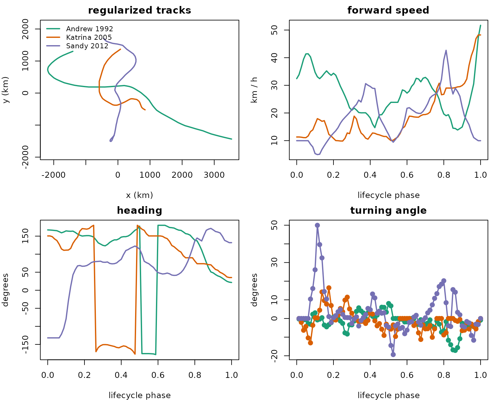
par(op)The result is a movement-data diagnostic rather than just a map: storms with visually similar tracks can differ sharply in when they accelerate, when they turn, and how abruptly their heading changes during recurvature.
A single 4-d curve: Hurricane Katrina (2005)
For a single storm the 4-component tf_mv is naturally
displayed in facet mode (type = "facet") – one panel per
component, all on the same normalised cycle phase axis:
katrina <- df |> filter(storm_id == "Katrina 2005") |> pull(track)
plot(katrina, type = "facet", lwd = 2)Wind and pressure are anti-correlated – pressure dips below 920 mbar
as wind peaks above 150 knots near phase ~0.55 – and the
(long, lat) panels show Katrina sliding northwest across
the Gulf and turning north into Louisiana. Bundling intensity and
trajectory as a single tfd_mv lets every operation
downstream (subsetting, summaries, arithmetic, plotting) treat them as
one object.
Track map, faceted by peak intensity
The geographic view uses the (long, lat) components
only. Faceting by peak Saffir-Simpson category separates the populations
cleanly, and a coastline backdrop (from maps::map, if
installed) anchors the geography:
have_maps <- requireNamespace("maps", quietly = TRUE)
pal <- c("grey50", "#fed976", "#feb24c", "#fd8d3c", "#e31a1c")
draw_coast <- function(xlim, ylim) {
if (!have_maps) return(invisible())
m <- maps::map("world", plot = FALSE,
xlim = xlim, ylim = ylim, fill = FALSE)
lines(m$x, m$y, col = "grey55", lwd = 0.6)
}
xlim <- range(unlist(tf_evaluations(tf_component(df$track, "long"))), na.rm = TRUE)
ylim <- range(unlist(tf_evaluations(tf_component(df$track, "lat"))), na.rm = TRUE)
op <- par(mfrow = c(2, 3), mar = c(3.4, 3.4, 2, 1), mgp = c(2, 0.7, 0))
for (k in seq_along(levels(df$strength))) {
lev <- levels(df$strength)[k]
trks <- df$track[df$strength == lev]
spatial <- tfd_mv(list(
long = tf_component(trks, "long"),
lat = tf_component(trks, "lat")
))
plot(range(xlim), range(ylim), type = "n",
xlab = "long", ylab = "lat",
main = sprintf("%s (n = %d)", lev, length(trks)))
draw_coast(xlim, ylim)
lines(spatial, col = pal[k], alpha = 0.4, lwd = 1)
}
plot.new()
legend("center", bty = "n", lwd = 2, col = pal, legend = levels(df$strength),
title = "peak intensity", cex = 1.05)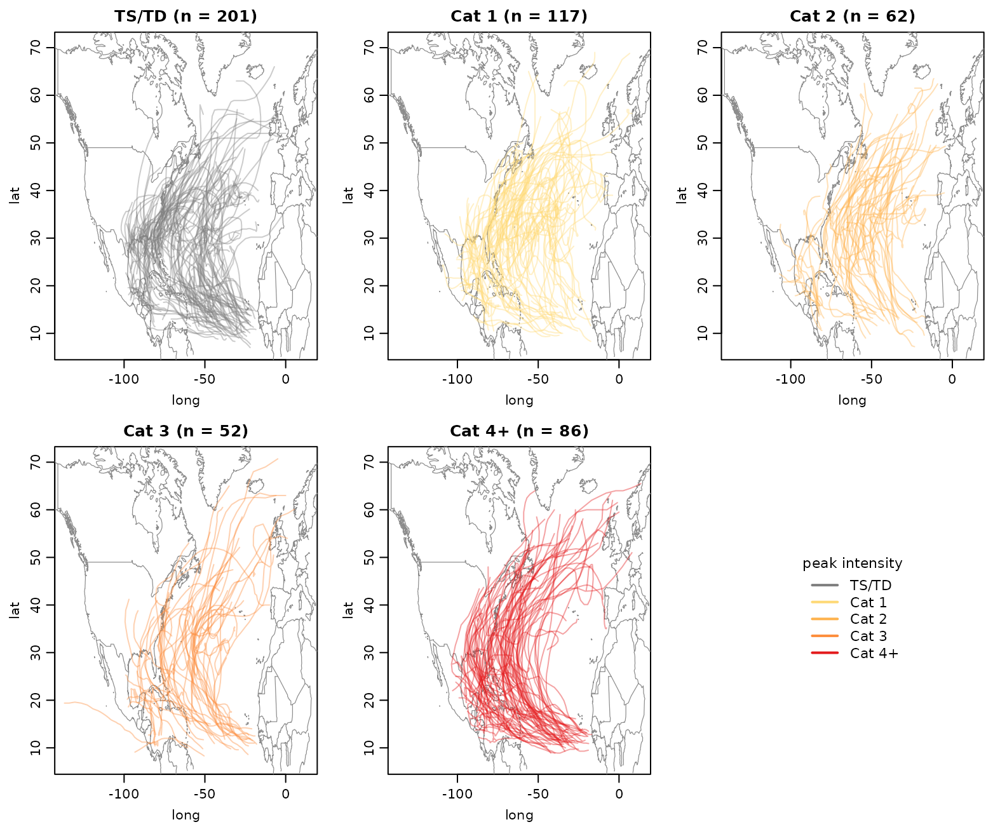
par(op)Tropical storms / depressions stay in the southern, western basin; cat-3 and cat-4+ tracks reach further north and east – they live longer, get caught by the westerlies, and recurve out to sea.
Scalar features extracted from the 4-d object
Every component of a tf_mv is a real tf
vector and supports the full univariate API, so per-storm scalar
features fall out as one-liners:
df <- df |> mutate(
path_km = tf_arclength(track_km),
duration = vapply(tf_arg(track_km), \(t) max(t) - min(t), numeric(1)),
mean_speed = path_km / duration, # km/h, lifetime average
peak_wind = vapply(tf_evaluations(tf_component(track, "wind")), max, numeric(1)),
min_pres = vapply(tf_evaluations(tf_component(track, "pres")), min, numeric(1))
)
df |>
group_by(strength) |>
summarise(
n = dplyr::n(),
median_path_km = round(median(path_km)),
median_speed_kmh = round(median(mean_speed), 1),
median_peak_wind = median(peak_wind),
median_min_pres = median(min_pres),
.groups = "drop"
)
#> # A tibble: 5 × 6
#> strength n median_path_km median_speed_kmh median_peak_wind
#> <fct> <int> <dbl> <dbl> <dbl>
#> 1 TS/TD 201 2924 20.8 50
#> 2 Cat 1 117 4266 21.4 75
#> 3 Cat 2 62 4860 22.2 90
#> 4 Cat 3 52 6035 22.9 105
#> 5 Cat 4+ 86 7399 24.6 130
#> # ℹ 1 more variable: median_min_pres <dbl>Median path length grows strongly from tropical-storm to cat-4+ storms, whereas lifetime-average forward speed increases more modestly. The canonical wind / pressure gap between categories is visible.
Intensity and forward-speed life-cycles per category
Plotting all forward-speed and intensity time courses at once is
hopeless (hundreds of irregular noodles). What we actually want is the
mean curve per intensity stratum on the normalised lifecycle
phase axis. Evaluate each component on a common phase grid, average
within each stratum, and re-wrap the result as a length-G
univariate tfd so we can use the standard
plot.tf / lines.tf machinery:
phase_grid <- seq(0, 1, length.out = 41)
# forward speed on normalised time: re-arg each storm's km-speed by
# t / T_i, so all storms share phase domain [0, 1].
speed_km <- tf_speed(df$track_km)
#> ✖ Differentiating over irregular grids can be unstable.
#> ✖ Differentiating over irregular grids can be unstable.
durations <- df$duration
speed_long <- do.call(rbind, lapply(seq_along(speed_km), function(i) {
data.frame(
id = names(speed_km)[i],
phase = tf_arg(speed_km[i])[[1]] / durations[i],
value = tf_evaluations(speed_km[i])[[1]]
)
}))
speed_phase <- tfd(speed_long, id = "id", arg = "phase", value = "value",
domain = c(0, 1))
# per-stratum mean curve on the regular phase grid, packaged as length-G tfd
stratum_mean_tfd <- function(comp, grp, grid = phase_grid) {
mat <- as.matrix(comp, arg = grid, interpolate = TRUE)
means <- vapply(levels(grp), function(g) {
rows <- which(grp == g)
if (length(rows) < 2L) return(rep(NA_real_, length(grid)))
colMeans(mat[rows, , drop = FALSE], na.rm = TRUE)
}, numeric(length(grid)))
out <- tfd(t(means), arg = grid, domain = c(0, 1))
names(out) <- levels(grp)
out
}
wind_avg <- stratum_mean_tfd(tf_component(df$track, "wind"), df$strength)
pres_avg <- stratum_mean_tfd(tf_component(df$track, "pres"), df$strength)
speed_avg <- stratum_mean_tfd(speed_phase, df$strength)
op <- par(mfrow = c(2, 2), mar = c(4, 4, 2, 1))
plot(wind_avg, col = pal, lwd = 2, alpha = 1,
xlab = "lifecycle phase", ylab = "wind (knots)",
main = "mean sustained wind")
legend("topright", bty = "n", lwd = 2, col = pal, legend = levels(df$strength),
cex = 0.9, title = "peak intensity")
plot(pres_avg, col = pal, lwd = 2, alpha = 1,
xlab = "lifecycle phase", ylab = "pressure (mbar)",
main = "mean central pressure")
plot(speed_avg, col = pal, lwd = 2, alpha = 1,
xlab = "lifecycle phase", ylab = "forward speed (km/h)",
main = "mean forward speed")
plot.new()
text(0.5, 0.7, "wind and pressure peak\nnear lifecycle phase 0.5;",
adj = 0.5, cex = 1.05)
text(0.5, 0.35, "forward speed peaks\nlate, during recurvature",
adj = 0.5, cex = 1.05)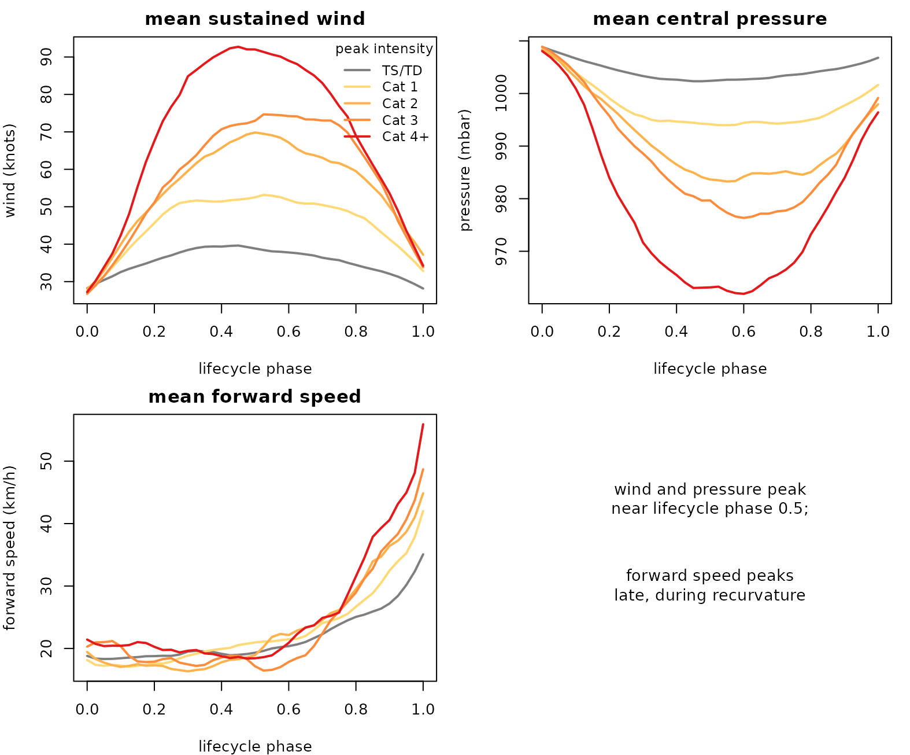
par(op)Three clean stories on a single tf_mv object: intensity
peaks mid-life-cycle (around phase ~ 0.5) and the gap
between categories is roughly uniform across the cycle; central pressure
mirrors wind; forward speed peaks much later (around
phase ~ 0.75) and the strongest storms accelerate the most
– the canonical recurvature signature.
Smoothing on normalised time
Fitting a basis representation on raw real-time data has a tractable
domain-extrapolation problem – the longest storm runs 600+ hours, but
most tracks end after 100-200 hours, and a shared basis over [0, 600]
extrapolates wildly. On the normalised phase version
this just disappears, because every storm spans [0, 1]:
top6 <- df |> arrange(desc(path_km)) |> slice(1:6) |> pull(storm_id)
# fit a per-component spline basis on (long, lat, wind, pres) over [0, 1]
tb <- tfb_mv(df$track[df$storm_id %in% top6], k = 12, verbose = FALSE)
# pull just the (long, lat) components out of the 4-d objects so plot.tf_mv
# defaults to the trajectory (long, lat) view
raw_xy <- df$track[df$storm_id %in% top6, , c("long", "lat")]
sm_xy <- tb[, , c("long", "lat")]
op <- par(mfrow = c(1, 2), mar = c(3.6, 3.6, 2, 1), mgp = c(2, 0.7, 0))
plot(range(xlim), range(ylim), type = "n",
xlab = "long", ylab = "lat", main = "raw observations")
draw_coast(xlim, ylim)
lines(raw_xy, col = 1:6, lwd = 1.6)
plot(range(xlim), range(ylim), type = "n",
xlab = "long", ylab = "lat", main = "spline-smoothed")
draw_coast(xlim, ylim)
lines(sm_xy, col = 1:6, lwd = 1.6)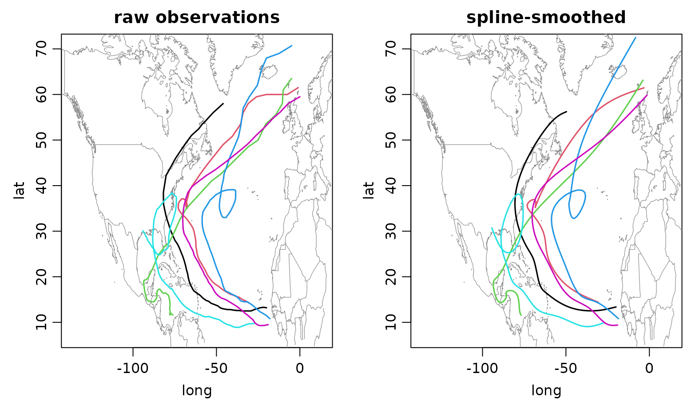
par(op)The smoothed trajectories pick up the gross recurvature shape without
the 6-hourly sampling jitter and – thanks to the normalised time axis –
without any extrapolation pathology. The same tb object
also carries clean smoothed wind / pressure curves for each storm; for
example:
op <- par(mfrow = c(1, 2), mar = c(4, 4, 2, 1))
plot(tf_component(tb, "wind"), col = 1:6, lwd = 2,
xlab = "lifecycle phase", ylab = "wind (knots)",
main = "smoothed wind")
plot(tf_component(tb, "pres"), col = 1:6, lwd = 2,
xlab = "lifecycle phase", ylab = "pressure (mbar)",
main = "smoothed pressure")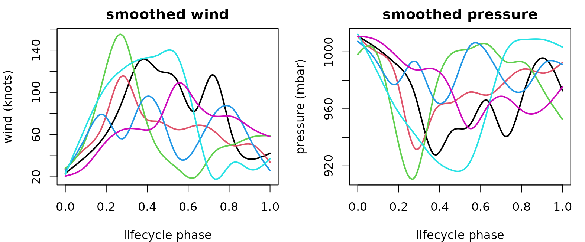
par(op)4. Recap
The two case studies above exercised exactly the same surface:
- construction from per-component
tfvectors (tfd_mv(list(...))), from a 3-d[curve, arg, component]array, or from a long/wide data frame; -
tf_components(),$component,tf_ncomp()for component access; - facet vs. trajectory plotting
(
plot(..., type = ...)); - vctrs-native arithmetic /
mean()/sd()returning a length-1tf_mv; -
tf_arclength()andtf_speed()as geometric primitives on the bundle; -
tfb_mv()for smoothing (basis = "spline") or per-component PC decomposition (basis = "fpc"), andtfb_mfpc()for joint multivariate FPCA with a single set of shared scores per curve (Happ and Greven 2018); - the alignment ladder:
tf_reparam_arclength()for constant-speed (shape-only) reparametrization,tf_register()for shared-warp alignment – from a single reference component (method = "cc") or jointly from all components (method = "srvf_mv") – andtf_register_shape()for full elastic shape registration, whosetf_rotations()/tf_scales()accessors expose the estimated rotations and (template-relative) scale factors; - full dplyr / tibble integration via the underlying vctrs proxy.
The common pattern is simple: keep coupled signals bundled as one object, use component accessors when a scalar or univariate summary is needed, and let the multivariate methods reuse the existing univariate kernels component-wise.